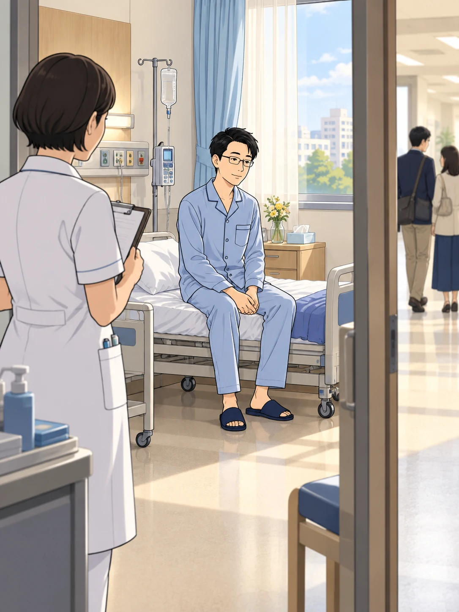
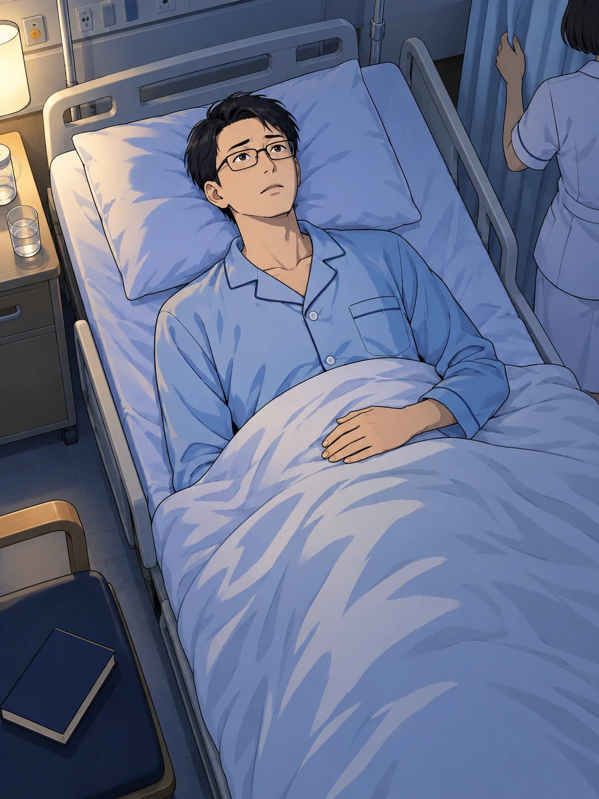
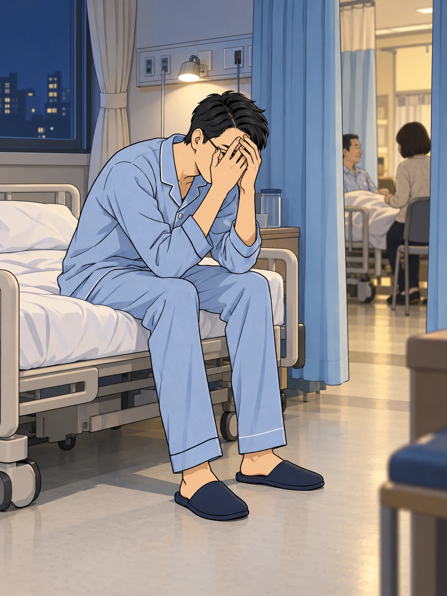
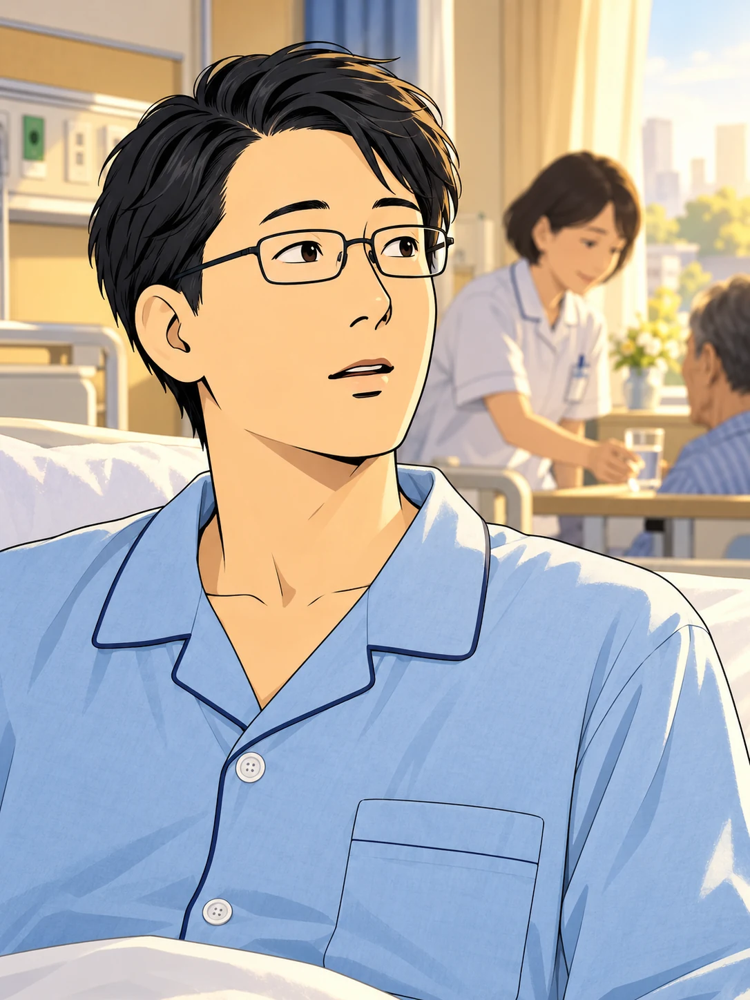
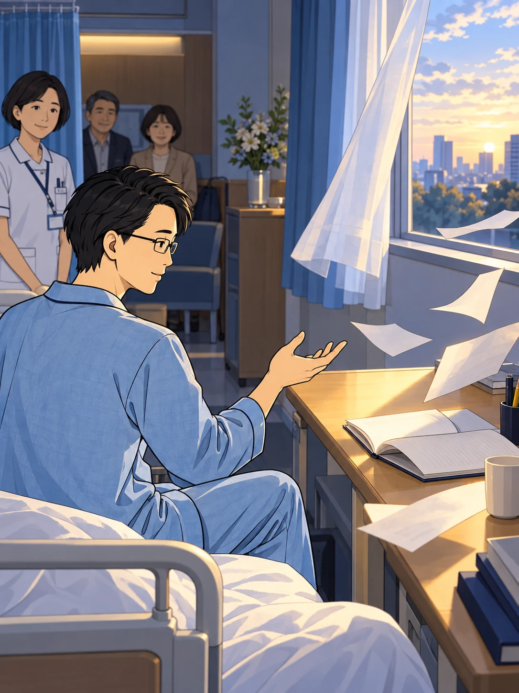
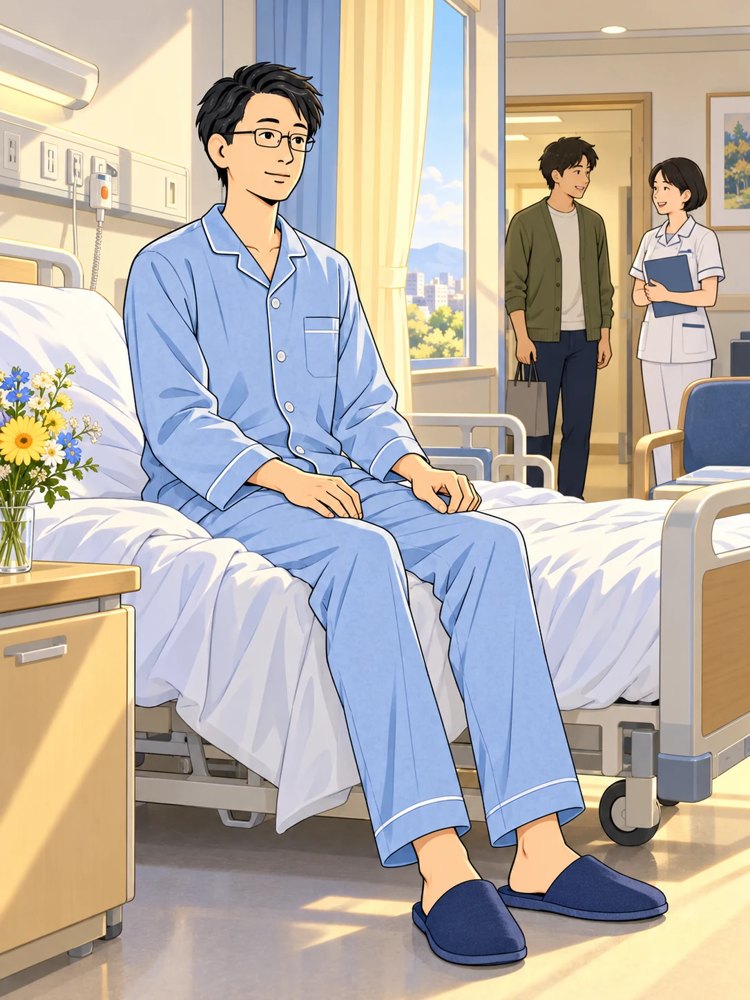

研究を続けるはずの日々は、
突然、病室の日々に変わった。

何かあれば、
呼んでくださいね。
声をかけてくれる人はいる。
それでも、不安は消えなかった。
これから、
どうなるのだろう。

天井を見つめる時間だけが、
長く、長く感じられた。
世界のしくみを知りたい。
そう考えてきた自分が——

心の不安すら、
コントロールできない。
そんなとき、
あの問いが、ふたたび浮かんだ。

まだ、否定しきれない
1%があった。
「ない」と決めつけていた手を、
少しだけ、ひらいてみる。

残された可能性
1%
この小さな可能性に、
向き合ってみよう。
答えは、まだ出ていない。
けれど、向き合い方は変えられる。

自分の生き方を、
もう一度、問い直そう。
それは、
自分を問い直す始まりだった。
人間
やりなおし
確かだと思っていたことを、
ひとつずつ、見つめ直していく。